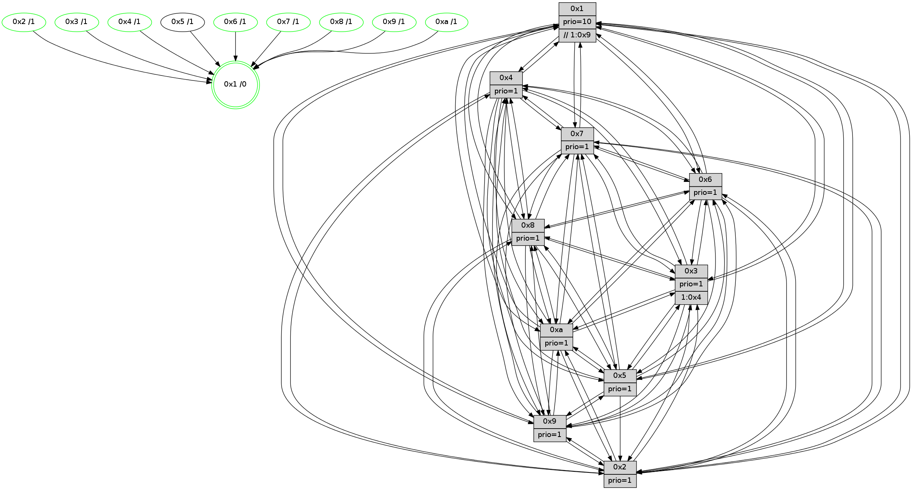

>> << IDX [start] -100 -25 -5 +0 +5 +25 +100 [1045.49028397]
 Previous packets
1040.003350 beacon04(faad) #0 coord=01,02,03,04,05,06,07,0a,09,08 cycle=688.0ms assoc 64 bb 46
1040.013349 beacon05(faad) #0 coord=01,02,03,04,05,06,07,0a,09,08 cycle=688.0ms assoc 64 c1 0b
1040.023349 beacon06(faad) #0 coord=01,02,03,04,05,06,07,0a,09,08 cycle=688.0ms assoc 64 4f dc
1040.033350 beacon07(faad) #0 coord=01,02,03,04,05,06,07,0a,09,08 cycle=688.0ms assoc 64 35 91
1040.043354 beacon0a(faad) #0 coord=01,02,03,04,05,06,07,0a,09,08 cycle=688.0ms assoc 64 44 9a
1040.053354 beacon09(faad) #0 coord=01,02,03,04,05,06,07,0a,09,08 cycle=688.0ms assoc 64 ca 4d
1040.063355 beacon08(faad) #0 coord=01,02,03,04,05,06,07,0a,09,08 cycle=688.0ms assoc 64 b0 00
1040.074546 [Hello(10): seq=597 sym=6,2,3,8,7,5,9,4,1 sysInfo=hasWarning stat=6:1,2,8,4/2:3,1,15,7/3:9,11,14,9/8:3,8,2,0/7:15,3,7,4/5:9,5,9,13/9:2,12,9,1/4:10,10,10,8/1:1,4,15,1]
1040.077724 [Color(2) seq=269 @0:0 prio=1]
1040.078962 [Hello(4): seq=664 sym=5,7,6,2,3,9,8,10,1 sysInfo= stat=5:9,10,4,13/7:4,8,3,9/6:8,5,1,10/2:11,9,15,11/3:12,3,0,9/9:0,15,9,9/8:7,9,7,4/10:15,15,10,11/1:3,4,10,1]
1040.081545 [Color(1) seq=345 @0:0 prio=10 >>1.@4,1.@6,1.@7]
1040.083139 [Hello(9): seq=608 sym=2,5,3,4,7,6,8,10,1 sysInfo=hasWarning stat=2:0,12,3,4/5:6,12,1,4/3:1,5,3,13/4:3,9,14,8/7:12,15,3,10/6:0,1,11,9/8:15,1,5,3/10:5,10,5,2/1:6,4,11,1]
1040.087237 [Color(9) seq=270 @0:0 prio=1]
1040.089403 [Color(4) seq=244 @0:0 prio=1]
1040.091638 [Hello(8): seq=608 sym=5,2,3,4,9,6,7,10,1 sysInfo=hasWarning stat=5:13,12,10,15/2:11,6,3,7/3:9,9,6,13/4:5,9,1,9/9:1,15,9,2/6:14,0,6,11/7:14,5,7,2/10:11,8,12,2/1:0,11,7,0]
1040.097081 [Hello(7): seq=664 sym=2,3,5,6,4,8,9,10,1 sysInfo=hasWarning stat=2:1,3,12,14/3:10,9,8,13/5:12,4,11,1/6:14,10,8,7/4:13,3,4,2/8:3,15,6,1/9:11,7,8,0/10:0,3,12,3/1:10,15,11,0]
1040.101180 [Color(7) seq=223 @0:0 prio=1]
----------------------------------------------------------------------
1040.761498 beacon01(faad) #0 coord=01,02,03,04,05,06,07,0a,09,08 cycle=688.0ms assoc
-- color-indic=1 64 e1 de
1040.771482 beacon02(faad) #0 coord=01,02,03,04,05,06,07,0a,09,08 cycle=688.0ms assoc 64 72 ef
1040.781480 beacon03(faad) #0 coord=01,02,03,04,05,06,07,0a,09,08 cycle=688.0ms assoc 64 08 a2
1040.791481 beacon04(faad) #0 coord=01,02,03,04,05,06,07,0a,09,08 cycle=688.0ms assoc 64 7f 48
1040.801480 beacon05(faad) #0 coord=01,02,03,04,05,06,07,0a,09,08 cycle=688.0ms assoc 64 05 05
1040.811480 beacon06(faad) #0 coord=01,02,03,04,05,06,07,0a,09,08 cycle=688.0ms assoc 64 8b d2
1040.821482 beacon07(faad) #0 coord=01,02,03,04,05,06,07,0a,09,08 cycle=688.0ms assoc 64 f1 9f
1040.831485 beacon0a(faad) #0 coord=01,02,03,04,05,06,07,0a,09,08 cycle=688.0ms assoc 64 80 94
1040.841485 beacon09(faad) #0 coord=01,02,03,04,05,06,07,0a,09,08 cycle=688.0ms assoc 64 0e 43
1040.851487 beacon08(faad) #0 coord=01,02,03,04,05,06,07,0a,09,08 cycle=688.0ms assoc 64 74 0e
1040.862438 [Hello(1): seq=574 sym=4,2,9,5,10,3,8,6,7 sysInfo=coloring-mode-on,ColoringModeRequestCalled stat=4:1,14,7,2/2:13,7,6,13/9:10,2,4,6/5:0,9,14,6/10:4,15,6,4/3:7,13,9,4/8:3,2,5,1/6:4,13,5,11/7:9,4,5,12]
1040.865976 [Hello(5): seq=665 sym=7,6,4,3,1,9,8,10,2 sysInfo=hasWarning stat=7:3,7,12,11/6:0,15,11,0/4:3,10,7,10/3:15,14,0,11/1:10,3,12,1/9:15,11,7,7/8:3,9,3,0/10:11,6,0,6/2:4,10,6,3]
1040.868605 [Hello(2): seq=661 sym=4,5,7,6,3,9,8,10,1 sysInfo=hasWarning stat=4:14,8,11,8/5:10,13,12,3/7:12,9,9,11/6:13,3,0,9/3:10,5,15,6/9:5,4,3,5/8:14,2,12,9/10:3,9,3,10/1:4,5,10,1]
1040.872046 [Color(8) seq=287 @0:0 prio=1]
1040.873949 [Hello(6): seq=665 sym=2,3,5,4,7,9,8,10,1 sysInfo= stat=2:12,11,5,3/3:7,3,6,10/5:2,1,5,15/4:5,6,14,3/7:10,3,6,9/9:6,6,6,6/8:3,1,2,3/10:5,10,10,12/1:2,15,9,1]
1040.877726 [Color(6) seq=297 @0:0 prio=1]
1040.882041 [Hello(3): seq=665 sym=1,7,6,2,4,8,9,10,5 sysInfo=hasWarning stat=1:0,8,4,0/7:15,5,14,9/6:7,9,14,3/2:5,13,1,13/4:7,13,5,9/8:0,6,14,2/9:14,13,3,12/10:15,13,1,3/5:7,3,10,13]
1040.884862 [Color(3) seq=294 @0:0 prio=1 >1.@4,1.@9,1.@a]
----------------------------------------------------------------------
1041.549628 beacon01(faad) #0 coord=01,02,03,04,05,06,07,0a,09,08 cycle=688.0ms assoc
-- color-indic=1 64 5d db
1041.559610 beacon02(faad) #0 coord=01,02,03,04,05,06,07,0a,09,08 cycle=688.0ms assoc 64 ce ea
1041.569611 beacon03(faad) #0 coord=01,02,03,04,05,06,07,0a,09,08 cycle=688.0ms assoc 64 b4 a7
1041.579610 beacon04(faad) #0 coord=01,02,03,04,05,06,07,0a,09,08 cycle=688.0ms assoc 64 c3 4d
1041.589611 beacon05(faad) #0 coord=01,02,03,04,05,06,07,0a,09,08 cycle=688.0ms assoc 64 b9 00
1041.599609 beacon06(faad) #0 coord=01,02,03,04,05,06,07,0a,09,08 cycle=688.0ms assoc 64 37 d7
1041.609611 beacon07(faad) #0 coord=01,02,03,04,05,06,07,0a,09,08 cycle=688.0ms assoc 64 4d 9a
1041.619615 beacon0a(faad) #0 coord=01,02,03,04,05,06,07,0a,09,08 cycle=688.0ms assoc 64 3c 91
1041.629617 beacon09(faad) #0 coord=01,02,03,04,05,06,07,0a,09,08 cycle=688.0ms assoc 64 b2 46
1041.639617 beacon08(faad) #0 coord=01,02,03,04,05,06,07,0a,09,08 cycle=688.0ms assoc 64 c8 0b
1041.650835 [Hello(8): seq=609 sym=5,2,3,4,9,6,7,10,1 sysInfo=hasWarning stat=5:13,12,10,15/2:11,6,3,7/3:10,10,6,13/4:5,9,1,9/9:1,15,9,2/6:15,1,6,11/7:15,6,7,2/10:11,8,12,2/1:1,11,7,0]
1041.654450 [Hello(10): seq=598 sym=6,2,3,8,7,5,9,4,1 sysInfo=hasWarning stat=6:2,3,8,4/2:4,2,15,7/3:10,12,14,9/8:4,9,2,0/7:0,4,7,4/5:10,5,9,13/9:3,13,9,1/4:11,11,10,8/1:2,5,15,1]
1041.657087 [Hello(4): seq=665 sym=5,7,6,2,3,9,8,10,1 sysInfo= stat=5:10,10,4,13/7:5,9,3,9/6:9,6,1,10/2:12,9,15,11/3:13,4,0,9/9:0,15,9,9/8:8,10,7,4/10:0,15,10,11/1:4,4,10,1]
1041.659839 [Color(2) seq=270 @0:0 prio=1]
1041.662617 [Color(4) seq=245 @0:0 prio=1]
1041.665359 [Hello(9): seq=609 sym=2,5,3,4,7,6,8,10,1 sysInfo=hasWarning stat=2:1,12,3,4/5:7,12,1,4/3:2,6,3,13/4:3,10,14,8/7:13,0,3,10/6:1,2,11,9/8:0,2,5,3/10:6,10,5,2/1:7,4,11,1]
1041.669459 [Color(9) seq=271 @0:0 prio=1]
1041.671134 [Hello(7): seq=665 sym=2,3,5,6,4,8,9,10,1 sysInfo=hasWarning stat=2:2,3,12,14/3:11,10,8,13/5:13,4,11,1/6:15,11,8,7/4:13,3,4,2/8:3,0,6,1/9:11,7,8,0/10:1,3,12,3/1:11,15,11,0]
1041.674294 [Color(7) seq=224 @0:0 prio=1]
1041.683291 [Color(1) seq=346 @0:0 prio=10 >>1.@4,1.@6,1.@7]
----------------------------------------------------------------------
1042.337759 beacon01(faad) #0 coord=01,02,03,04,05,06,07,0a,09,08 cycle=688.0ms assoc
-- color-indic=1 64 69 c3
1042.347743 beacon02(faad) #0 coord=01,02,03,04,05,06,07,0a,09,08 cycle=688.0ms assoc 64 fa f2
1042.357742 beacon03(faad) #0 coord=01,02,03,04,05,06,07,0a,09,08 cycle=688.0ms assoc 64 80 bf
1042.367742 beacon04(faad) #0 coord=01,02,03,04,05,06,07,0a,09,08 cycle=688.0ms assoc 64 f7 55
1042.377741 beacon05(faad) #0 coord=01,02,03,04,05,06,07,0a,09,08 cycle=688.0ms assoc 64 8d 18
1042.387742 beacon06(faad) #0 coord=01,02,03,04,05,06,07,0a,09,08 cycle=688.0ms assoc 64 03 cf
1042.397742 beacon07(faad) #0 coord=01,02,03,04,05,06,07,0a,09,08 cycle=688.0ms assoc 64 79 82
1042.407749 beacon0a(faad) #0 coord=01,02,03,04,05,06,07,0a,09,08 cycle=688.0ms assoc 64 08 89
1042.417746 beacon09(faad) #0 coord=01,02,03,04,05,06,07,0a,09,08 cycle=688.0ms assoc 64 86 5e
1042.427748 beacon08(faad) #0 coord=01,02,03,04,05,06,07,0a,09,08 cycle=688.0ms assoc 64 fc 13
1042.439334 [Hello(1): seq=575 sym=4,2,9,5,10,3,8,6,7 sysInfo=coloring-mode-on,ColoringModeRequestCalled stat=4:1,14,7,2/2:14,7,6,13/9:10,2,4,6/5:1,9,14,6/10:4,15,6,4/3:8,14,9,4/8:4,3,5,1/6:5,14,5,11/7:9,4,5,12]
1042.442575 [Hello(5): seq=666 sym=7,6,4,3,1,9,8,10,2 sysInfo=hasWarning stat=7:4,8,12,11/6:1,0,11,0/4:4,11,7,10/3:0,15,0,11/1:10,4,12,1/9:0,12,7,7/8:4,10,3,0/10:12,6,0,6/2:5,11,6,3]
1042.445293 [Hello(3): seq=666 sym=1,7,6,2,4,8,9,10,5 sysInfo=hasWarning stat=1:1,9,5,0/7:0,6,14,9/6:7,9,14,3/2:5,14,1,13/4:8,14,5,9/8:1,6,14,2/9:15,13,3,12/10:0,13,1,3/5:8,3,10,13]
1042.447995 [Hello(6): seq=666 sym=2,3,5,4,7,9,8,10,1 sysInfo= stat=2:12,12,5,3/3:8,4,6,10/5:3,1,5,15/4:6,7,14,3/7:11,4,6,9/9:7,6,6,6/8:4,1,2,3/10:6,10,10,12/1:3,0,10,1]
1042.450505 [STC(10)->1 #0.149 tree-change,inconsistent-stability,stable,to-color d=1]
1042.452699 [Color(8) seq=288 @0:0 prio=1]
1042.457413 [TreeStatus(10)-.->1 #0.149 tree-change,inconsistent-stability,stable child=1]
1042.458588 [Hello(2): seq=662 sym=4,5,7,6,3,9,8,10,1 sysInfo=hasWarning stat=4:14,9,11,8/5:10,13,12,3/7:13,10,9,11/6:14,4,0,9/3:11,6,15,6/9:6,5,3,5/8:15,3,12,9/10:3,9,3,10/1:4,6,10,1]
1042.462959 [STC(3)->1 #0.149 tree-change,inconsistent-stability,stable,to-color d=1]
1042.465247 [TreeStatus(3)-.->1 #0.149 tree-change,inconsistent-stability,stable child=1]
1042.467214 [STC(6)->1 #0.149 tree-change,inconsistent-stability,stable,to-color d=1]
1042.469171 [Color(6) seq=298 @0:0 prio=1]
1042.475336 [Color(3) seq=295 @0:0 prio=1 >1.@4,1.@9,1.@a]
----------------------------------------------------------------------
1043.125891 beacon01(faad) #0 coord=01,02,03,04,05,06,07,0a,09,08 cycle=688.0ms assoc
-- color-indic=1 64 d5 c6
1043.135874 beacon02(faad) #0 coord=01,02,03,04,05,06,07,0a,09,08 cycle=688.0ms assoc 64 46 f7
1043.145875 beacon03(faad) #0 coord=01,02,03,04,05,06,07,0a,09,08 cycle=688.0ms assoc 64 3c ba
1043.155874 beacon04(faad) #0 coord=01,02,03,04,05,06,07,0a,09,08 cycle=688.0ms assoc 64 4b 50
1043.165875 beacon05(faad) #0 coord=01,02,03,04,05,06,07,0a,09,08 cycle=688.0ms assoc 64 31 1d
1043.175875 beacon06(faad) #0 coord=01,02,03,04,05,06,07,0a,09,08 cycle=688.0ms assoc 64 bf ca
1043.185875 beacon07(faad) #0 coord=01,02,03,04,05,06,07,0a,09,08 cycle=688.0ms assoc 64 c5 87
1043.195879 beacon0a(faad) #0 coord=01,02,03,04,05,06,07,0a,09,08 cycle=688.0ms assoc 64 b4 8c
1043.205880 beacon09(faad) #0 coord=01,02,03,04,05,06,07,0a,09,08 cycle=688.0ms assoc 64 3a 5b
1043.215881 beacon08(faad) #0 coord=01,02,03,04,05,06,07,0a,09,08 cycle=688.0ms assoc 64 40 16
1043.228070 [Hello(10): seq=599 sym=6,2,3,8,7,5,9,4,1 sysInfo=hasWarning stat=6:2,4,9,4/2:5,3,15,7/3:10,13,15,10/8:4,9,2,0/7:1,5,7,4/5:10,5,9,13/9:4,13,9,1/4:12,12,10,8/1:2,6,0,1]
1043.231103 [Hello(4): seq=666 sym=5,7,6,2,3,9,8,10,1 sysInfo= stat=5:11,10,4,13/7:6,10,3,9/6:10,7,2,10/2:13,9,15,11/3:14,5,1,10/9:1,0,9,9/8:9,11,7,4/10:0,15,11,12/1:5,5,10,1]
1043.234444 [Hello(7): seq=666 sym=2,3,5,6,4,8,9,10,1 sysInfo=hasWarning stat=2:3,3,12,14/3:12,11,9,14/5:14,4,11,1/6:0,12,9,7/4:13,3,4,2/8:4,1,6,1/9:11,7,8,0/10:1,3,13,4/1:12,0,11,0]
1043.237276 [Color(7) seq=225 @0:0 prio=1]
1043.238696 [Hello(8): seq=610 sym=5,2,3,4,9,6,7,10,1 sysInfo=hasWarning stat=5:13,12,10,15/2:12,7,3,7/3:10,11,7,14/4:6,10,1,9/9:2,0,9,2/6:15,2,7,11/7:0,7,7,2/10:12,8,12,3/1:2,12,7,0]
1043.242203 [Color(2) seq=271 @0:0 prio=1]
1043.244764 [Hello(9): seq=610 sym=2,5,3,4,7,6,8,10,1 sysInfo=hasWarning stat=2:2,12,3,4/5:8,12,1,4/3:3,7,4,14/4:3,10,14,8/7:14,1,3,10/6:2,3,12,9/8:1,3,5,3/10:6,10,6,3/1:8,5,11,1]
1043.247971 [Color(4) seq=246 @0:0 prio=1]
1043.249331 [Color(9) seq=272 @0:0 prio=1]
1043.255009 [Color(1) seq=347 @0:0 prio=10 >>1.@4,1.@6,1.@7]
----------------------------------------------------------------------
1043.914022 beacon01(faad) #0 coord=01,02,03,04,05,06,07,0a,09,08 cycle=688.0ms assoc
-- color-indic=1 64 11 c8
1043.924006 beacon02(faad) #0 coord=01,02,03,04,05,06,07,0a,09,08 cycle=688.0ms assoc 64 82 f9
1043.934004 beacon03(faad) #0 coord=01,02,03,04,05,06,07,0a,09,08 cycle=688.0ms assoc 64 f8 b4
1043.944005 beacon04(faad) #0 coord=01,02,03,04,05,06,07,0a,09,08 cycle=688.0ms assoc 64 8f 5e
1043.954005 beacon05(faad) #0 coord=01,02,03,04,05,06,07,0a,09,08 cycle=688.0ms assoc 64 f5 13
1043.964004 beacon06(faad) #0 coord=01,02,03,04,05,06,07,0a,09,08 cycle=688.0ms assoc 64 7b c4
1043.974005 beacon07(faad) #0 coord=01,02,03,04,05,06,07,0a,09,08 cycle=688.0ms assoc 64 01 89
1043.984009 beacon0a(faad) #0 coord=01,02,03,04,05,06,07,0a,09,08 cycle=688.0ms assoc 64 70 82
1043.994011 beacon09(faad) #0 coord=01,02,03,04,05,06,07,0a,09,08 cycle=688.0ms assoc 64 fe 55
1044.004011 beacon08(faad) #0 coord=01,02,03,04,05,06,07,0a,09,08 cycle=688.0ms assoc 64 84 18
1044.015267 [Hello(1): seq=576 sym=4,2,9,5,10,3,8,6,7 sysInfo=coloring-mode-on,ColoringModeRequestCalled stat=4:1,14,7,2/2:15,7,6,13/9:10,2,4,6/5:2,9,14,6/10:5,15,7,5/3:9,15,10,5/8:4,4,5,1/6:6,15,6,11/7:9,4,5,12]
1044.018188 [Hello(5): seq=667 sym=7,6,4,3,1,9,8,10,2 sysInfo=hasWarning stat=7:5,9,12,11/6:2,1,12,0/4:5,12,7,10/3:1,0,1,12/1:10,5,12,1/9:1,13,7,7/8:5,11,3,0/10:13,6,1,7/2:6,12,6,3]
1044.021225 [Hello(6): seq=667 sym=2,3,5,4,7,9,8,10,1 sysInfo= stat=2:12,13,5,3/3:8,5,6,10/5:4,1,5,15/4:7,8,14,3/7:12,5,6,9/9:8,7,6,6/8:5,1,2,3/10:7,10,10,12/1:4,1,10,1]
1044.025008 [Color(6) seq=299 @0:0 prio=1]
1044.027049 [Hello(2): seq=663 sym=4,7,6,3,9,8,10,1 sysInfo=hasWarning stat=4:14,10,11,8/7:13,10,9,11/6:14,5,1,9/3:11,7,0,7/9:7,6,3,5/8:15,3,12,9/10:4,9,3,10/1:4,7,10,1]
1044.029365 [Color(10) seq=256 @0:0 prio=1]
1044.032184 [Hello(3): seq=667 sym=1,7,6,2,4,8,9,10,5 sysInfo=hasWarning stat=1:2,10,5,0/7:1,7,14,9/6:7,9,14,3/2:5,15,1,13/4:9,15,5,9/8:2,6,14,2/9:0,14,3,12/10:1,13,1,3/5:9,3,10,13]
1044.036669 [Color(8) seq=289 @0:0 prio=1]
1044.038665 [Color(3) seq=296 @0:0 prio=1 >1.@4,1.@9,1.@a]
----------------------------------------------------------------------
1044.702151 beacon01(faad) #0 coord=01,02,03,04,05,06,07,0a,09,08 cycle=688.0ms assoc
-- color-indic=1 64 ad cd
1044.712133 beacon02(faad) #0 coord=01,02,03,04,05,06,07,0a,09,08 cycle=688.0ms assoc 64 3e fc
1044.722134 beacon03(faad) #0 coord=01,02,03,04,05,06,07,0a,09,08 cycle=688.0ms assoc 64 44 b1
1044.732136 beacon04(faad) #0 coord=01,02,03,04,05,06,07,0a,09,08 cycle=688.0ms assoc 64 33 5b
1044.742133 beacon05(faad) #0 coord=01,02,03,04,05,06,07,0a,09,08 cycle=688.0ms assoc 64 49 16
1044.752136 beacon06(faad) #0 coord=01,02,03,04,05,06,07,0a,09,08 cycle=688.0ms assoc 64 c7 c1
1044.762135 beacon07(faad) #0 coord=01,02,03,04,05,06,07,0a,09,08 cycle=688.0ms assoc 64 bd 8c
1044.772138 beacon0a(faad) #0 coord=01,02,03,04,05,06,07,0a,09,08 cycle=688.0ms assoc 64 cc 87
1044.782138 beacon09(faad) #0 coord=01,02,03,04,05,06,07,0a,09,08 cycle=688.0ms assoc 64 42 50
1044.792140 beacon08(faad) #0 coord=01,02,03,04,05,06,07,0a,09,08 cycle=688.0ms assoc 64 38 1d
1044.803378 [Hello(8): seq=611 sym=5,2,3,4,9,6,7,10,1 sysInfo=hasWarning stat=5:13,12,10,15/2:12,8,3,7/3:10,12,7,14/4:6,11,1,9/9:3,1,9,2/6:15,2,7,11/7:0,7,7,2/10:12,8,12,3/1:3,13,7,0]
1044.807335 [Hello(10): seq=600 sym=6,2,3,8,7,5,9,4,1 sysInfo=hasWarning stat=6:2,4,9,4/2:5,4,15,7/3:11,14,15,10/8:5,10,2,0/7:2,6,7,4/5:10,5,9,13/9:5,14,9,1/4:13,13,10,8/1:3,7,0,1]
1044.810724 [Color(1) seq=348 @0:0 prio=10 >>1.@9,1.@a]
1044.812482 [Hello(7): seq=667 sym=2,3,5,6,4,8,9,10,1 sysInfo=hasWarning stat=2:4,4,12,14/3:13,12,9,14/5:15,4,11,1/6:1,13,9,7/4:13,4,4,2/8:5,2,6,1/9:12,8,8,0/10:2,4,13,4/1:13,1,11,0]
1044.815025 [Hello(9): seq=611 sym=2,5,3,4,7,6,8,10,1 sysInfo=hasWarning stat=2:3,12,3,4/5:9,12,1,4/3:4,8,4,14/4:3,10,14,8/7:14,1,3,10/6:3,4,12,9/8:1,4,5,3/10:7,11,6,3/1:9,6,11,1]
1044.818060 [Hello(4): seq=667 sym=5,7,6,2,3,9,8,10,1 sysInfo= stat=5:12,10,4,13/7:6,10,3,9/6:11,8,2,10/2:14,9,15,11/3:15,6,1,10/9:1,1,9,9/8:9,12,7,4/10:1,0,11,12/1:6,6,10,1]
1044.821473 [Color(2) seq=272 @0:0 prio=1]
1044.822948 [Color(4) seq=247 @0:0 prio=1]
1044.826799 [Color(7) seq=226 @0:0 prio=1]
1044.834552 [Color(9) seq=273 @0:0 prio=1]